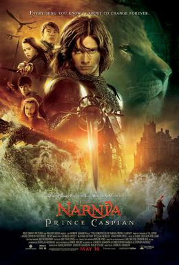
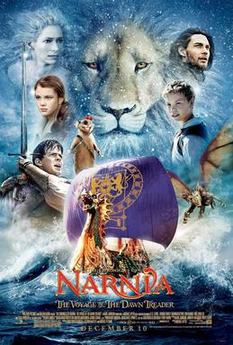
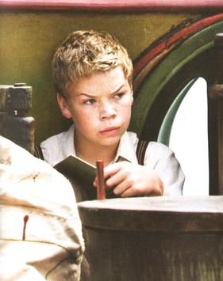

The Lion, the Witch and the Wardrobe
The Lion, the Witch and the Wardrobe, completed by the end of March 1949 and published by Geoffrey Bles in the United Kingdom on 16 October 1950,
tells the story of four ordinary children: Peter, Susan, Edmund, and Lucy Pevensie, who have been evacuated to the English countryside from London in 1940
following the outbreak of World War II. They discover a wardrobe in Professor Digory Kirke's house that leads to the magical land of Narnia.
The Pevensie children help Aslan, a talking lion, save Narnia from the evil White Witch, who has reigned over the land of Narnia for a century of perpetual winter with no Christmas.
The children become kings and queens of this new-found land and establish the Golden Age of Narnia, leaving a legacy to be rediscovered in later books.
Prince Caspian: The Return to Narnia
Completed after Christmas 1949 and published on 15 October 1951, Prince Caspian: The Return to Narnia tells the story of the Pevensie children's second trip to Narnia.
They are drawn back by the power of Susan's horn, blown by Prince Caspian to summon help in his hour of need. Narnia, as they knew it, is no more,
as 1,300 years have passed and their castle is in ruins, while all Narnians have retreated so far within themselves that only Aslan's magic can wake them.
Caspian has fled into the woods to escape his uncle, Miraz, who has usurped the throne. The children set out once again to save Narnia.
The Voyage of the Dawn Treader
Written between January and February 1950 and published on 15 September 1952, The Voyage of the Dawn Treader sees Edmund and Lucy Pevensie, along with their priggish cousin,
Eustace Scrubb, return to Narnia. Once there, they join Caspian's voyage on the ship Dawn Treader to find the seven lords who were banished when Miraz took over the throne.
This perilous journey brings them face to face with many wonders and dangers as they sail toward Aslan's country at the edge of the world.
The Silver Chair
Completed at the beginning of March 1951 and published 7 September 1953, The Silver Chair is the first Narnia book not involving the Pevensie children, focusing instead on Eustace.
Several months after The Voyage of the Dawn Treader Aslan calls Eustace back to Narnia along with his classmate Jill Pole.
They are given four signs to aid them in the search for Prince Caspian's son Rilian, who disappeared ten years earlier on a quest to avenge his mother's death.
Fifty years have passed in Narnia; Eustace is still a child, but Caspian, barely an adult in The Voyage of the Dawn Treader, is now an old man. Eustace and Jill,
with the help of Puddleglum the Marsh-wiggle, face danger and betrayal on their quest to find Rilian.
The Horse and His Boy
Begun in March and completed at the end of July 1950, The Horse and His Boy was published on 6 September 1954.
The story takes place during the reign of the Pevensies in Narnia, an era which begins and ends in the last chapter of The Lion, the Witch and the Wardrobe.
A young boy named Shasta and a talking horse named Bree, both of whom are in bondage in the country of Calormen, are the protagonists.
By "chance", they meet and plan their return to Narnia and freedom. Along the way they meet Aravis and her talking horse Hwin who are also fleeing to Narnia.
The Magician's Nephew
Completed in February 1954 and published by Bodley Head in London on 2 May 1955, the prequel The Magician's Nephew brings the reader back to the origins of Narnia where
we learn how Aslan created the world and how evil first entered it.
Digory Kirke and his friend Polly Plummer stumble into different worlds by experimenting with magic rings made by Digory's uncle.
In the dying world of Charn they awaken Queen Jadis, and they witness the creation of Narnian world (where Jadis later becomes the White Witch).
Many long-standing questions about the world are answered as a result. The story is set in 1900, when Digory was a 12-year-old boy.
He is a middle-aged professor by the time he hosts the Pevensie children in The Lion, the Witch and the Wardrobe 40 years later.
The Last Battle
Completed in March 1953 and published 4 September 1956, The Last Battle chronicles the end of the world of Narnia.
Jill and Eustace return to save Narnia from Shift, an ape, who tricks Puzzle, a donkey, into impersonating the lion Aslan, precipitating a showdown between the Calormenes and King Tirian.
This leads to the end of Narnia, revealing the true Narnia to which Aslan brings them.
Reading Order for Series
Fans of the series often have strong opinions over the order in which the books should be read.
The issue revolves around the placement of The Magician's Nephew and The Horse and His Boy
in the series. Both are set significantly earlier in the story of Narnia than their publication
order and fall somewhat outside the main story arc connecting the others.
The reading order of the other five books is not disputed.
| Original publication order |
| The Lion, the Witch and the Wardrobe |
| The Voyage of the Dawn Treader |
| Prince Caspian |
| The Silver Chair |
| The Horse and His Boy |
| The Magician's Nephew |
| The Last Battle |
| Harper Collins order (chronological) |
| The Magician's Nephew |
| The Lion, the Witch and the Wardrobe |
| The Horse and His Boy |
| Prince Caspian |
| The Voyage of the Dawn Treader |
| The Silver Chair |
| The Last Battle |
The Lion, the Witch and the Wardrobe

The Lion, the Witch and the Wardrobe, based on the novel of the same title, is the first film in the series.
Directed by Andrew Adamson, it was shot mainly in New Zealand, though locations were used in Poland, the Czech Republic and the United Kingdom.
The story follows the four British Pevensie siblings, who are evacuated during the Blitz to the countryside, where they find a wardrobe that leads to the fantasy world of Narnia.
There, they must ally with the lion Aslan against the forces of the White Witch, who has placed Narnia in an eternal winter.
The film was released theatrically on 9 December 2005 and on DVD on 4 April 2006 and grossed over $745 million worldwide.
Prince Caspian

Prince Caspian, based on the novel of the same title, is the second film in the series and the last distributed by Walt Disney Pictures.
The story follows the same Pevensie children who were transported to Narnia in the previous film as they return to Narnia, where 1,300 years
have passed and the land has been invaded by the Telmarines. The four Pevensie children aid Prince Caspian in his struggle for the throne against his corrupt uncle, King Miraz.
The film was released on 16 May 2008. It grossed $419 million worldwide.
The Voyage of the Dawn Treader


The Voyage of the Dawn Treader, based on the novel of the same title, is the first film in the series not to be co-produced by Disney,
who dropped out over a budget dispute with Walden Media. In February 2009 it was announced that 20th Century Fox would replace Disney for future installments.
Directed by Michael Apted, the movie was filmed almost entirely in Australia.
The story follows the two younger Pevensie children as they return to Narnia with their cousin, Eustace Scrubb.
They join the old king of Narnia, Caspian, in his quest to rescue seven lost lords and save Narnia from a corrupting evil that resides on a lit island.
The film was released on 10 December 2010 (in RealD 3D in select theatres) and grossed over $415 million worldwide.
The Silver Chair
After Walden Media's contract of the series' film rights expired in 2011 it was originally assumed that 2014 would be the earliest that production on
another Narnia film could begin according to the moratorium placed on the C. S. Lewis estate's right to sell the books' film option.
On 1 October 2013, The C. S. Lewis Company announced that it had entered into an agreement with the Mark Gordon Company to
produce The Chronicles of Narnia: The Silver Chair, based on The Silver Chair. Mark Gordon and Douglas Gresham along with Vincent Sieber,
the Los Angeles based director of The C. S. Lewis Company, would serve as producers and work with The Mark Gordon Company on developing the script.
On 5 December 2013, it was announced that David Magee would write the screenplay.
In July 2014, the official Narnia website allowed the opportunity for fans to suggest names for the Lady of the Green Kirtle, the main antagonist.
The winning name is to be selected by Mark Gordon and David Magee for use in the final script of The Chronicles of Narnia: The Silver Chair.
While the film's producers have been calling the film a "reboot" to the series, in actuality this is referring to the fact that the film has a new
creative team not associated with those who worked on the previous three films. The film itself is still considered to be a sequel to
the film adaptation of The Voyage of the Dawn Treader. On 9 August 2016, it was announced that Sony's TriStar Productions and Entertainment One Films
will finance and distribute the fourth film with Mark Gordon Company (which eOne owns) and C. S. Lewis Company.[10]
In April 2017, it was announced that Joe Johnston had been hired to direct The Silver Chair. In October, Johnston said filming is expected to begin in late 2018.
During an interview with Red Carpet News TV, producer Mark Gordon revealed scarce details about the new technologies and setting that would be used for the upcoming film,
but did not give a release date.